Lesson 4: saving-and-sharing-documents
Lesson 4: Saving and Sharing Documents
/en/word/creating-and-opening-documents/content/
Introduction
When you create a new document in Word, you'll need to know how to save it so you can access and edit it later. As with previous versions of Word, you can save files to your computer. If you prefer, you can also save files to the cloud using OneDrive. You can even export and share documents directly from Word.
Watch the video below to learn how to save and share Word documents.

Save and Save As
Word offers two ways to save a file: Save and Save As. These options work in similar ways, with a few important differences.
- Save: When you create or edit a document, you'll use the Save command to save your changes. You'll use this command most of the time. When you save a file, you'll only need to choose a file name and location the first time. After that, you can click the Save command to save it with the same name and location.
- Save As: You'll use this command to create a copy of a document while keeping the original. When you use Save As, you'll need to choose a different name and/or location for the copied version.
About OneDrive
Most features in Microsoft Office, including Word, are geared toward saving and sharing documents online. This is done with OneDrive, which is an online storage space for your documents and files. If you want to use OneDrive, make sure you’re signed in to Word with your Microsoft account. Review our lesson on Understanding OneDrive to learn more.
To save a document:
It's important to save your document whenever you start a new project or make changes to an existing one. Saving early and often can prevent your work from being lost. You'll also need to pay close attention to where you save the document so it will be easy to find later.
- Locate and select the Save command on the Quick Access Toolbar.
 2. If you're saving the file for the first time, the Save As pane will appear in Backstage view.
3. You'll then need to choose where to save the file and give it a file name. Click Browse to select a location on your computer. You can also click OneDrive to save the file to your OneDrive.
2. If you're saving the file for the first time, the Save As pane will appear in Backstage view.
3. You'll then need to choose where to save the file and give it a file name. Click Browse to select a location on your computer. You can also click OneDrive to save the file to your OneDrive.
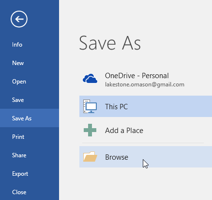
4. The Save As dialog box will appear. Select the location where you want to save the document. 5. Enter a file name for the document, then click Save.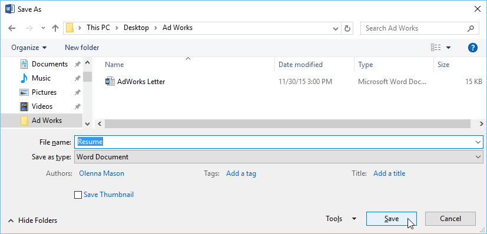
6. The document will be saved. You can click the Save command again to save your changes as you modify the document.Using Save As to make a copy
If you want to save a different version of a document while keeping the original, you can create a copy. For example, if you have a file named Sales Report, you could save it as Sales Report 2 so you'll be able to edit the new file and still refer back to the original version.
To do this, you'll click the Save As command in Backstage view. Just like when saving a file for the first time, you'll need to choose where to save the file and give it a new file name.
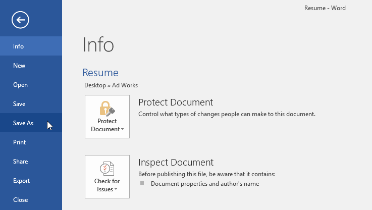
To change the default save location:
If you don't want to use OneDrive, you may be frustrated that OneDrive is selected as the default location when saving. If you find this inconvenient, you can change the default save location so This PC is selected by default.
- Click the File tab to access Backstage view.
 2. Click Options.
2. Click Options.
 3. The Word Options dialog box will appear. Select Save on the left, check the box next to Save to Computer by default, then click OK. The default save location will be changed.
3. The Word Options dialog box will appear. Select Save on the left, check the box next to Save to Computer by default, then click OK. The default save location will be changed.

AutoRecover
Word automatically saves your documents to a temporary folder while you are working on them. If you forget to save your changes or if Word crashes, you can restore the file using AutoRecover.
To use AutoRecover:
- Open Word. If autosaved versions of a file are found, the Document Recovery pane will appear on the left.
- Click to open an available file. The document will be recovered.
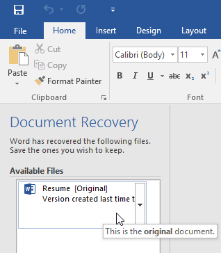
By default, Word autosaves every 10 minutes. If you are editing a document for less than 10 minutes, Word may not create an autosaved version.
If you don't see the file you need, you can browse all autosaved files from Backstage view. Select the File tab, click Manage Versions, then choose Recover Unsaved Documents.
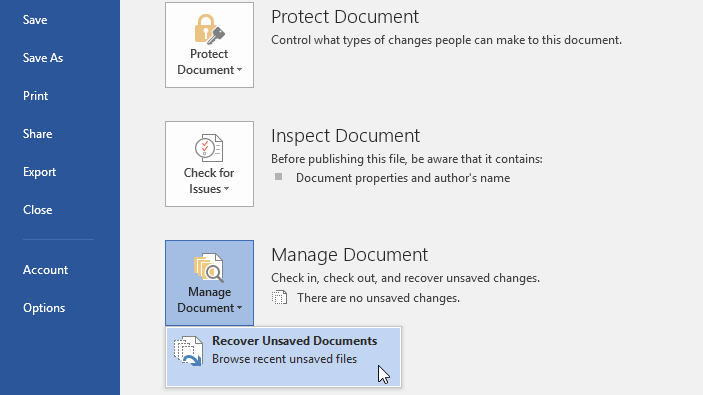
Exporting documents
By default, Word documents are saved in the .docx file type. However, there may be times when you need to use another file type, such as a PDF or Word 97-2003 document. It's easy to export your document from Word to a variety of file types.
To export a document as a PDF file:
Exporting your document as an Adobe Acrobat document, commonly known as a PDF file, can be especially useful if you're sharing a document with someone who does not have Word. A PDF file will make it possible for recipients to view—but not edit—the content of your document.
- Click the File tab to access Backstage view, choose Export, then select Create PDF/XPS.
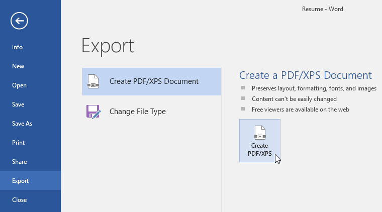
2. The Save As dialog box will appear. Select the location where you want to export the document, enter a file name, then click Publish.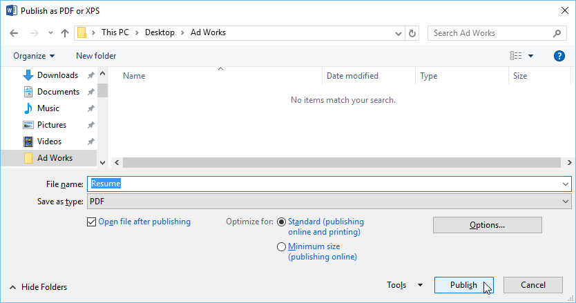
If you need to edit a PDF file, Word allows you to convert a PDF file into an editable document. Read our guide on Editing PDF Files for more information.
To export a document to other file types:
You may also find it helpful to export your document to other file types, like a Word 97-2003 Document if you need to share with people using an older version of Word or a .txt file if you need a plain-text version of your document.
- Click the File tab to access Backstage view, choose Export, then select Change File Type.
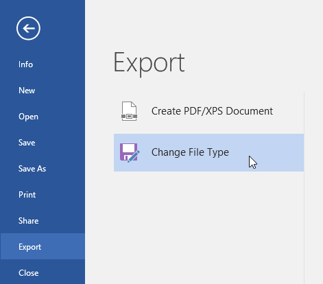
2. Select a file type, then click Save As.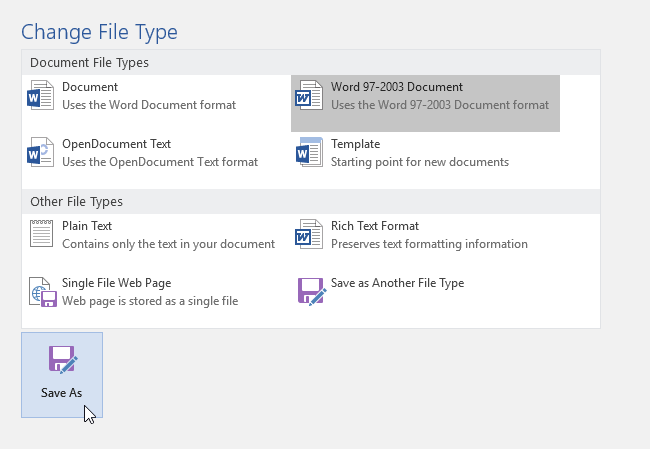
3. The Save As dialog box will appear. Select the location where you want to export the document, enter a file name, then click Save.You can also use the Save as type drop-down menu in the Save As dialog box to save documents to a variety of file types.
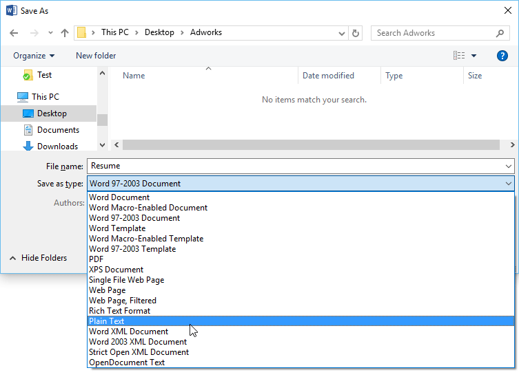
Sharing documents
Word makes it easy to share and collaborate on documents using OneDrive. In the past, if you wanted to share a file with someone you could send it as an email attachment. While convenient, this system also creates multiple versions of the same file, which can be difficult to organize.
When you share a document from Word, you're actually giving others access to the exact same file. This lets you and the people you share with edit the same document without having to keep track of multiple versions.
In order to share a document, it must first be saved to your OneDrive.
To share a document:
- Click the File tab to access Backstage view, then click Share.
 2. A Send Link window will appear.
2. A Send Link window will appear.
Click the buttons in the interactive below to learn more about different ways to share a document.
edit hotspots
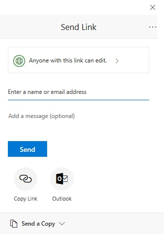
Link Settings
Here, you can select who's allowed to access your file, whether you want to allow editing, and the option to include an expiration date for the file.
Enter a Name or Email Address
Type the name or email address of the person you'd like to share your file with here.
Add a Message
If you'd like to include a message with your file, you can type it here.
Send
Click Send to send your file to its recipient(s).
Copy Link
Click Copy Link to copy a URL that you can send to others via email, messaging, or any other method.
Outlook
If you'd prefer to use Outlook, click here to send your file through an email.
Send a Copy
You can use this option if you'd prefer to send a copy so the recipient isn't editing the same file as you.
Challenge!
- Open our practice document.
- Use Save As to create a copy of the document. Name the new copy Saving Challenge Practice. You can save it to a folder on your computer or to your OneDrive.
- Export your document as a PDF.
/en/word/text-basics/content/